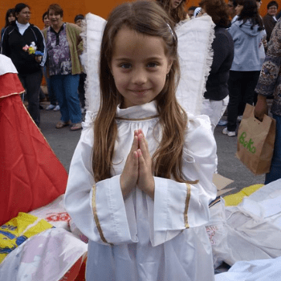
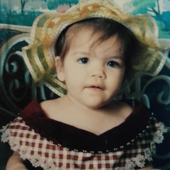
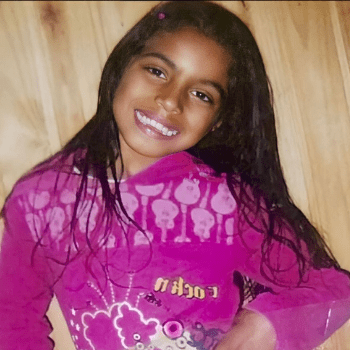

YourShades é uma marca contemporânea de prêt-à-porter que visa oferecer um guarda-roupa
minimalista focado em cortes limpos e detalhes impecáveis para pessoas fortes e sofisticadas.
No centro de YourShades está um ethos de sofisticação minimalista e elegância feminina, masculina e
infantil. Mesclando tendências globais e clássicos contemporâneos inspirados na arte, arquitetura e
design moderno, as silhuetas exclusivas estão em cortes altamente modernos, linhas arrojadas e precisão
geométrica.
A YourShades foi fundada no Brasil por Laura Barros, Carolina Peres e Larissa Simões em 2014. No estudio
da empresa, situado no Dubai Design District, são desenhadas 3 coleções por ano.
Filiais da YourShades
São Paulo - SP
Shopping Fulano de Tal
Avenida Porto Novo N° 234
Fernando de Noronha - PE
Florianopólis - SC
Torres - RS
As Criadoras

Larissa Simões
Larissa Simões, nasceu em dezembro de 2004 em Rio Grande-RS. Sagitariana com ascendente e lua em aquário.

Laura Barros
Laura Barros, nasceu em julho de 2005 em Rio Grande-RS. Canceriana com ascendente em aquário e lua em escorpião.

Carolina Peres
Carolina Peres, nasceu em agosto de 2004 em Rio Grande-RS. Leonina com ascendente em sagitário e lua em libra.